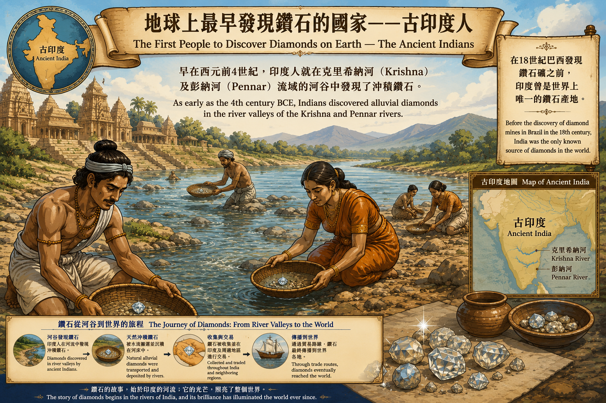
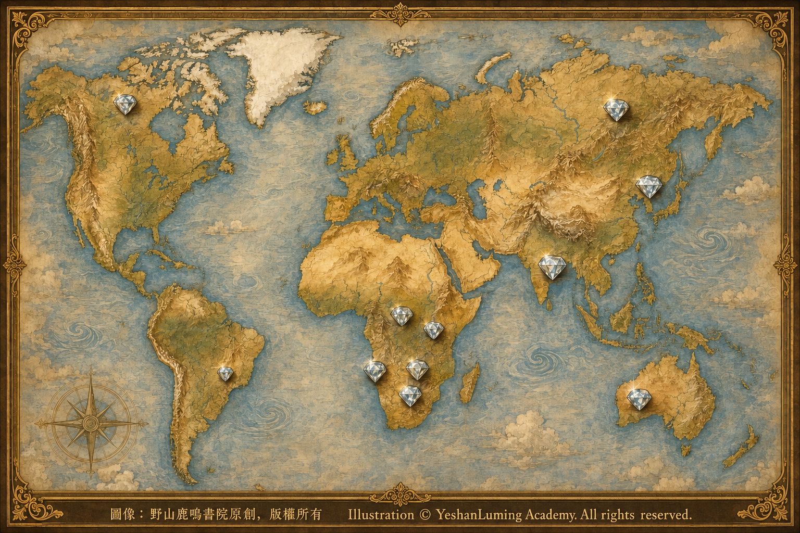

世界鑽石產地·從南非到西伯利亞Diamond Sources of the World · From South Africa to Siberia
The World of Gemstones · Diamond SeriesDiamond Sources of the World · From South Africa to Siberia
The World of Gemstones · Diamond Series世界鑽石產地·從南非到西伯利亞
寶石世界·鑽石篇
寶石世界·鑽石篇（113）The World of Gemstones · Diamond Series (113)
當我們談到鑽石時，往往關注的是它本身的品質與光彩；但在另一個層面上，一顆鑽石的「出身」同樣重要。它來自哪裡，往往意味著不同的歷史背景，也代表著形成鑽石的不同地質條件。
從地質學的角度看，世界上的鑽石資源分布並不均勻。只有在特定的地質環境中，才有可能形成並保存具有開採價值的鑽石礦床。這些地區通常與古老的地殼結構有關，尤其是那些穩定存在了數十億年的大陸克拉通。
所謂克拉通，是地球上最古老、最穩定的大陸地殼部分。正是在這些區域之下，地幔中的溫度與壓力條件適合鑽石形成；而含有鑽石的金伯利岩或其他火山岩，又可能把它們從地幔深處迅速帶到地表。這也是為什麼世界主要的鑽石產地，往往集中在少數幾個古老而穩定的大陸地區。
如果從歷史角度來看，最早被人類認識並開採的鑽石來自印度。早在數千年前，人們就在印度的河流與沖積層中發現了鑽石，並將其視為珍貴的寶物。許多古老的傳奇鑽石，如後來的「光之山」，最初都出自這片土地。
「光之山」鑽石歷經多個王朝與帝國之手，最終成為英國王室的珍寶之一。這顆鑽石不僅象徵著權力，也見證了歷史的變遷。關於它的故事，我們將在後面的專文中詳細展開。
然而，真正改變全球鑽石格局的，是19世紀非洲鑽石礦床的發現。
當我們談到鑽石時，往往關注的是它本身的品質與光彩；但在另一個層面上，一顆鑽石的「出身」同樣重要。它來自哪裡，往往意味著不同的歷史背景，也代表著形成鑽石的不同地質條件。
從地質學的角度看，世界上的鑽石資源分布並不均勻。只有在特定的地質環境中，才有可能形成並保存具有開採價值的鑽石礦床。這些地區通常與古老的地殼結構有關，尤其是那些穩定存在了數十億年的大陸克拉通。
所謂克拉通，是地球上最古老、最穩定的大陸地殼部分。正是在這些區域之下，地幔中的溫度與壓力條件適合鑽石形成；而含有鑽石的金伯利岩或其他火山岩，又可能把它們從地幔深處迅速帶到地表。這也是為什麼世界主要的鑽石產地，往往集中在少數幾個古老而穩定的大陸地區。
如果從歷史角度來看，最早被人類認識並開採的鑽石來自印度。早在數千年前，人們就在印度的河流與沖積層中發現了鑽石，並將其視為珍貴的寶物。許多古老的傳奇鑽石，如後來的「光之山」，最初都出自這片土地。
「光之山」鑽石歷經多個王朝與帝國之手，最終成為英國王室的珍寶之一。這顆鑽石不僅象徵著權力，也見證了歷史的變遷。關於它的故事，我們將在後面的專文中詳細展開。
然而，真正改變全球鑽石格局的，是19世紀非洲鑽石礦床的發現。
1860年代後期，人們首先在南非奧蘭治河與瓦爾河一帶發現大量沖積鑽石。1870年前後，又在金伯利及其附近地區發現了產於原生岩體中的鑽石。這些發現使人類逐漸認識到，鑽石並不只是河流中偶然撿拾到的寶物，它們還可以蘊藏在特定的火山岩體之中。
南非金伯利礦區的開發，使鑽石從偶然發現的珍寶，變成可以進行大規模、系統化開採的礦產資源。隨之而來的，是鑽石產量迅速增加、現代鑽石工業興起，以及全球鑽石市場逐步形成。
從寶石學和地質學的角度看，南非鑽石資源之所以豐富，正是因為當地具備鑽石形成、運移與保存所需要的地質條件。這裡不僅發現了眾多含鑽金伯利岩體，也為人類研究地幔物質、鑽石形成與火山活動提供了重要信息。
在這片土地上，誕生了許多世界著名的鑽石。其中最具代表性的，就是我們之前提到的庫里南鑽石。它不僅體積巨大，也象徵著南非在世界鑽石歷史中的重要地位。關於這顆鑽石的切割、分配與流轉，我們會在後文專門講述。
隨著時間推移，新的鑽石產地陸續被發現。20世紀中葉以後，俄羅斯西伯利亞地區成為全球最重要的鑽石產區之一。這些礦床同樣位於古老的克拉通之上，具有穩定而獨特的地質背景。
西伯利亞氣候嚴寒，冬季漫長，許多鑽石礦區甚至位於永久凍土帶。採礦者不僅要面對地下深處堅硬的岩石，還要克服極端低溫與偏遠環境造成的生存困境。即使如此，俄羅斯仍然發展出規模龐大的鑽石工業，成為世界主要的天然鑽石生產國之一，其產量對全球鑽石市場具有重要影響。
在非洲南部，博茨瓦納也是不能忽略的世界級鑽石產地。博茨瓦納發現了多座高品質、大規模的鑽石礦山。鑽石產業不僅改變了這個國家的經濟面貌，也使它在世界鑽石市場上占有極為重要的地位。
安哥拉與剛果民主共和國同樣擁有豐富的鑽石資源。這些地區既有原生礦床，也有河流搬運形成的沖積礦床。納米比亞的鑽石則別具特色：一些鑽石經過漫長的河流搬運，最後沉積在大西洋沿岸，甚至進入近海海底，因此形成了世界著名的海岸與海洋鑽石礦床。
北美洲的加拿大，是20世紀末崛起的重要鑽石產地。加拿大北部地廣人稀，氣候嚴寒，鑽石礦山多位於偏遠地區。加拿大鑽石進入市場後，也使世界天然鑽石的供應來源變得更加多元。
在東亞，中國同樣擁有天然鑽石資源。中國遼闊的國土之下，分布著華北克拉通與揚子克拉通等古老地質構造，具備形成和保存鑽石的條件。目前已知的主要天然鑽石產區，包括遼寧瓦房店、山東蒙陰—臨沭，以及湖南沅江、沅水流域。遼寧和山東以金伯利岩型原生礦床著稱，湖南則主要發現了經河流搬運和沉積形成的鑽石砂礦。
中國也曾發現多顆引人注目的大鑽石。其中最著名的常林鑽石，於1977年在山東臨沭縣被發現，重量達158.786克拉，晶體完整，質地優良，是中國現存最具代表性的大顆天然鑽石。據地方志和相關歷史資料記載，早在1937年秋，山東郯城縣金雞嶺還曾發現一顆重量達281.25克拉的「金雞鑽石」，比常林鑽石更大。抗日戰爭期間，這顆珍貴的鑽石被侵華日軍掠走，此後下落不明，成為日本侵華戰爭給中國造成財產掠奪與歷史損失的又一見證，也為中國鑽石史留下了一段至今尚未解開的懸案。
然而，中國的天然鑽石資源雖然確實存在，勘探與開採規模卻一直比較有限。與世界主要鑽石生產國相比，中國已知礦床的總體儲量、品位與經濟開採條件，尚不足以形成龐大的天然鑽石工業。因此，天然鑽石從未成為中國礦業發展中的重要支柱。
與此形成鮮明對照的是，中國建立了世界上規模最大的人工合成金剛石產業。最初，這些人造金剛石主要用於切削、磨削、鑽探與精密製造；近年來，寶石級培育鑽石也迅速發展。當工業需求可以由人造金剛石大量滿足，首飾市場又有培育鑽石作為新的選擇時，大規模勘探和開採天然鑽石的經濟吸引力，也在一定程度上受到影響。
除了非洲、俄羅斯、加拿大與中國，澳洲也曾經是重要的鑽石產地。尤其是西澳的阿蓋爾礦，以出產粉紅鑽石聞名於世。阿蓋爾礦開採的絕大多數鑽石並不是粉紅色；然而，它所出產的少量粉紅色、紅色與紫羅蘭色鑽石，卻因顏色濃艷、來源獨特而享譽全球。
阿蓋爾礦於2020年停止採礦。礦山關閉以後，市場不再有新的阿蓋爾鑽石持續產出，具有可靠來源紀錄的阿蓋爾粉紅鑽石因而更加稀少，也進一步受到收藏家與珠寶市場的特別關注。關於這些粉鑽的故事與市場變化，我們在鑽石110和鑽石111中已經做過專門介紹。

Click to enlarge
按照GIA建立的鑽石4C分級體系，產地並不是評定鑽石品質的項目。一顆鑽石的顏色、淨度、切工與克拉重量，不會因為它來自某個著名礦區，就自動獲得更高的品質等級。
但是，在市場與收藏領域，產地仍然可能具有重要的附加意義。某些礦區因為特殊的歷史、有限的產量、獨特的顏色，或者已經停止開採，而受到收藏家的格外關注。
需要注意的是，鑽石產地不能只靠肉眼觀察或一般寶石學特徵輕易判定，可靠的礦山紀錄、供應鏈追蹤與來源證明十分重要。
例如，具有可靠來源紀錄的阿蓋爾粉紅鑽石，可能因為其顏色、稀有程度、礦山歷史與停止開採的背景，而在市場上受到更多青睞。對這類鑽石而言，人們收藏的已經不只是一顆寶石，也是在收藏一段無法重新開始的礦山歷史。
從全球視角來看，鑽石的分布，其實是一張由地質條件、歷史發現與人類活動共同編織的網絡。每一個產地不僅是一個地理位置，也是一段故事的起點。
從印度的古老河流，到南非的礦區；從西伯利亞的冰原，到澳洲的荒野；從博茨瓦納的岩管，到加拿大的凍土、納米比亞的大西洋海岸，以及中國古老的克拉通，鑽石在不同土地上被發現，也在不同文化中被賦予了不同的意義。
也許正因如此，當我們看到一顆鑽石時，它不只是地球深處的產物，也是一段跨越地域與歷史的漫長旅程。
（未完待續）
When we speak of diamonds, we often focus on their quality and brilliance. Yet on another level, a diamond’s “place of origin” is equally significant. Where it comes from often points to a distinct historical background and to the different geological conditions under which it was formed.
From a geological perspective, the world’s diamond resources are far from evenly distributed. Diamond deposits of economic value can form and survive only under particular geological conditions. Such regions are usually associated with ancient structures of the Earth’s crust, especially continental cratons that have remained stable for billions of years.
A craton is one of the oldest and most stable portions of the Earth’s continental crust. Beneath these regions, temperature and pressure conditions in the mantle are suitable for diamond formation, while diamond-bearing kimberlite or other volcanic rocks may carry the diamonds rapidly from deep within the mantle toward the surface. This explains why the world’s major diamond-producing regions are often concentrated in only a few ancient and geologically stable continental areas.
From a historical perspective, the earliest diamonds known and mined by humankind came from India. Thousands of years ago, diamonds were discovered in Indian rivers and alluvial deposits and treasured as precious objects. Many of the world’s ancient and legendary diamonds, including the stone later known as the Koh-i-Noor, originally came from this land.
The Koh-i-Noor passed through the hands of successive dynasties and empires before eventually becoming one of the treasures of the British Crown. This diamond not only came to symbolize power, but also witnessed the upheavals of history. We will explore its story in detail in a later article devoted specifically to this legendary stone.
The discovery of African diamond deposits in the nineteenth century, however, was what truly transformed the global diamond landscape.
When we speak of diamonds, we often focus on their quality and brilliance. Yet on another level, a diamond’s “place of origin” is equally significant. Where it comes from often points to a distinct historical background and to the different geological conditions under which it was formed.
From a geological perspective, the world’s diamond resources are far from evenly distributed. Diamond deposits of economic value can form and survive only under particular geological conditions. Such regions are usually associated with ancient structures of the Earth’s crust, especially continental cratons that have remained stable for billions of years.
A craton is one of the oldest and most stable portions of the Earth’s continental crust. Beneath these regions, temperature and pressure conditions in the mantle are suitable for diamond formation, while diamond-bearing kimberlite or other volcanic rocks may carry the diamonds rapidly from deep within the mantle toward the surface. This explains why the world’s major diamond-producing regions are often concentrated in only a few ancient and geologically stable continental areas.
From a historical perspective, the earliest diamonds known and mined by humankind came from India. Thousands of years ago, diamonds were discovered in Indian rivers and alluvial deposits and treasured as precious objects. Many of the world’s ancient and legendary diamonds, including the stone later known as the Koh-i-Noor, originally came from this land.
The Koh-i-Noor passed through the hands of successive dynasties and empires before eventually becoming one of the treasures of the British Crown. This diamond not only came to symbolize power, but also witnessed the upheavals of history. We will explore its story in detail in a later article devoted specifically to this legendary stone.
The discovery of African diamond deposits in the nineteenth century, however, was what truly transformed the global diamond landscape.
In the late 1860s, large quantities of alluvial diamonds were first discovered around South Africa’s Orange and Vaal Rivers. Around 1870, diamonds occurring in primary rock formations were also found in Kimberley and its surrounding areas. These discoveries gradually led people to understand that diamonds were not merely treasures found by chance in rivers; they could also be contained within particular kinds of volcanic rock.
The development of the Kimberley mining district transformed diamonds from treasures discovered by chance into a mineral resource that could be extracted systematically and on a massive scale. Diamond production rose rapidly, the modern diamond industry emerged, and a global diamond market gradually took shape.
From gemological and geological perspectives, South Africa’s rich diamond resources are the result of the geological conditions necessary for diamonds to form, travel upward and remain preserved. Numerous diamond-bearing kimberlite bodies have been discovered there, providing valuable evidence for the study of mantle materials, diamond formation and volcanic activity.
Many of the world’s most famous diamonds emerged from this land. The most representative among them is the Cullinan Diamond, which we discussed earlier. Its enormous size alone made it extraordinary, but it also came to symbolize South Africa’s central place in the history of diamonds. Its cutting, division and subsequent journey will be examined in a dedicated article later in this series.
As time passed, new diamond-producing regions were discovered one after another. From the middle of the twentieth century onward, Siberia in Russia became one of the world’s most important diamond-producing regions. These deposits are likewise situated on ancient cratons and possess a stable and distinctive geological setting.
Siberia has a bitterly cold climate and long winters, and many of its diamond-mining regions lie within zones of permanent permafrost. Miners must confront not only the hard rock deep underground, but also the struggle for survival created by extreme cold and geographical isolation. Even under such conditions, Russia has developed an enormous diamond industry and become one of the world’s leading producers of natural diamonds, with an output that exerts a significant influence on the global diamond market.
In southern Africa, Botswana is another world-class diamond source that cannot be overlooked. A number of large, high-quality diamond mines have been discovered there. The diamond industry has not only transformed the country’s economy, but has also given Botswana an exceptionally important place in the global diamond market.
Angola and the Democratic Republic of the Congo also possess abundant diamond resources. These regions contain both primary deposits and alluvial deposits formed through transportation by rivers. Namibia’s diamonds, however, have a character all their own: some were carried over great distances by rivers before being deposited along the Atlantic coast or even on the seabed offshore, creating the world-famous coastal and marine diamond deposits.
In North America, Canada emerged as an important diamond producer near the end of the twentieth century. Northern Canada is vast, sparsely populated and bitterly cold, and many of its diamond mines are situated in remote areas. The arrival of Canadian diamonds on the market further diversified the global sources of natural diamond supply.
In East Asia, China also possesses natural diamond resources. Beneath its vast territory lie ancient geological structures such as the North China Craton and the Yangtze Craton, which provide the conditions necessary for diamonds to form and remain preserved. China’s principal known natural diamond regions include Wafangdian in Liaoning Province, the Mengyin–Linshu area in Shandong Province, and the Yuanjiang and Yuanshui river basins in Hunan Province. Liaoning and Shandong are known for primary kimberlite-hosted deposits, while Hunan has yielded mainly alluvial diamonds transported and deposited by rivers.
China has also produced several remarkable large diamonds. The most famous is the Changlin Diamond, discovered in Linshu County, Shandong Province, in 1977. Weighing 158.786 carats, with a well-formed crystal and fine quality, it is one of the most representative large natural diamonds still preserved in China. According to local chronicles and related historical records, an even larger stone—the 281.25-carat “Golden Rooster Diamond”—was discovered as early as the autumn of 1937 at Golden Rooster Ridge in Tancheng County, Shandong Province. During the War of Resistance Against Japanese Aggression, this precious diamond was looted by the invading Japanese army and subsequently disappeared. It stands as another witness to the plunder of Chinese property and the historical losses inflicted by Japan’s war of aggression, while leaving behind a mystery in China’s diamond history that remains unsolved to this day.
Although China unquestionably possesses natural diamond resources, the scale of its exploration and mining has remained relatively limited. Compared with the world’s leading diamond-producing countries, China’s known deposits have not offered the overall reserves, grades and economically viable mining conditions needed to sustain a vast natural diamond industry. Natural diamonds have therefore never become a major pillar of China’s mining sector.
In striking contrast, China has developed the world’s largest synthetic diamond industry. Initially, these manufactured diamonds were used mainly for cutting, grinding, drilling and precision manufacturing; in recent years, the production of gem-quality laboratory-grown diamonds has also expanded rapidly. When industrial needs can be met by synthetic diamonds in enormous quantities, while the jewelry market has gained laboratory-grown diamonds as another option, the economic incentive for large-scale exploration and mining of natural diamonds is, to some extent, further diminished.
Beyond Africa, Russia, Canada and China, Australia was once another important source of diamonds. The Argyle Mine in Western Australia was especially renowned for its pink diamonds. The overwhelming majority of diamonds extracted from Argyle were not pink; nevertheless, the small number of pink, red and violet diamonds it produced became celebrated around the world for their intense colors and distinctive origin.
The Argyle Mine ceased mining operations in 2020. After its closure, no newly mined Argyle diamonds continued to enter the market. Argyle pink diamonds with reliable records of origin consequently became even rarer and attracted particular attention from collectors and the jewelry market. We have already explored the stories of these pink diamonds and the changes in their market in Diamonds 110 and 111.
Click to enlarge
Under the diamond 4Cs grading system established by GIA, geographic origin is not a factor in assessing diamond quality. A diamond does not automatically receive a higher grade for its color, clarity, cut or carat weight simply because it comes from a famous mining region.
In the market and the world of collecting, however, origin can still carry important additional significance. Certain mining regions attract particular interest from collectors because of their exceptional histories, limited production, distinctive colors or the fact that their mines have ceased operating.
It is important to understand that a diamond’s geographic origin cannot readily be determined through visual examination or ordinary gemological characteristics alone. Reliable mining records, supply-chain tracking and documentation of provenance are essential.
An Argyle pink diamond with a reliable record of origin, for example, may be especially sought after because of its color, rarity, mining history and the closure of the mine itself. In collecting such a diamond, one is acquiring more than a gemstone; one is also preserving a chapter of mining history that can never begin again.
Viewed from a global perspective, the distribution of diamonds forms a network woven together by geological conditions, historical discoveries and human activity. Every diamond source is not merely a geographical location, but also the beginning of a story.
From the ancient rivers of India to the mines of South Africa; from the frozen expanses of Siberia to the Australian wilderness; from Botswana’s volcanic pipes to the Canadian tundra, Namibia’s Atlantic coast and the ancient cratons of China, diamonds have been discovered in very different lands and endowed with different meanings by different cultures.
Perhaps that is why, whenever we look at a diamond, we are seeing not only a creation from the depths of the Earth, but also the culmination of a long journey across geography and history.
(To be continued)